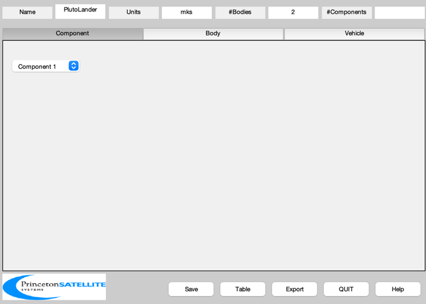
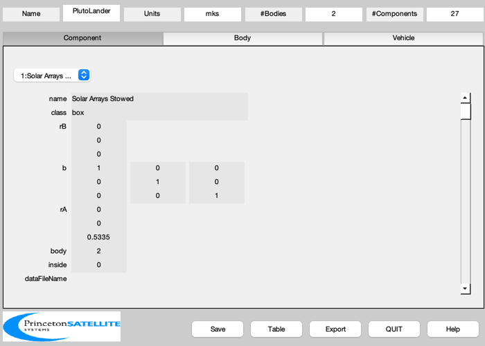
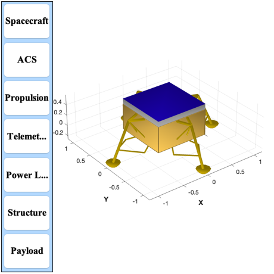

Generate Pluto lander model
Generate a CAD model of a Pluto lander. Creates power and mass reports of the model and exports it to OBJ. Saves the model in PlutoLander.mat which is used by other demos. The model may be generated with the solar arrays stowed or deployed.
See also BuildCADModel, CreateBody, CreateComponent, CreateReport, ExportOBJ, ThrusterCAD, PanelFrame, StarCameraBasicModel, Constant, SaveStructure, ShapedStrut, Q2Mat, U2Q, Unit, LandingLegsCAD
Contents
%-------------------------------------------------------------------------- % Copyright (c) 2014 Princeton Satellite Systems, Inc. % All rights reserved. %-------------------------------------------------------------------------- % Since 2016.1 %-------------------------------------------------------------------------- % Multibody switch multiBody = false; arraysStowed = true;
Constants
rhoCarbonFiber = 1600; rhoAluminum = 2700; rhoGlass = 2400; rhoSteel = 8000; rhoTungsten = 15630; inToM = 0.0254; rhoSolarPanel = 63/(8.3*2.3); % Dawn spacecraft areal mass (kg/m2) lToM3 = 0.001; % Liters to cubic meters
Mission information
massFuel = 80; massTotal = 150+massFuel; aRatio = 1.5; gPluto = 0.62; thrust = aRatio*gPluto*massTotal;
Spacecraft hardware parameters
% Thrusters densityADN = 1.1679e+03; % ADN green fuel massTank = massFuel*[1 1]/2; nTanks = length(massTank); volTank = massTank./densityADN; scale = 27.8*0.0254/168; dT = 11.8*0.0254; massThruster = 10.8/2.205; [vT, fT] = ThrusterCAD( [0;0;-1], dT, scale*99, 20, 15*scale, 44*scale, 5*scale ); rThruster = [0;0;0.2]; % Inertia inertia = [1.1565 -0.0074 0.0561;... -0.0074 1.0380 0.02281;... 0.0561 0.0228 0.7354]; % Fuel tank fTank = 49/656; rTank = (volTank/(4*pi/3)).^(1/3); % Bus zBox = 2.4*max(rTank); xBox = 4.8*max(rTank); yBox = xBox; panelThickness = 0.004; xTank = 0.8*max(rTank)*1.3; rATank = [xTank*[1 -1;1 -1];zBox*[1 1]/2]; % Star camera cameraAperture = 12.5; cameraFocalLength = 25.0; cameraLengthSunShade = 35.0; cameraApertureSunShade = 25.0; massCamera = 0.25; rCamera = 0.4*[xBox -xBox;-yBox yBox;zBox zBox]; uC = [0;0;1]; v1 = Unit([1;-1;-1]); v2 = Unit([-1;1;-1]); b1 = Q2Mat(U2Q(uC,v1)); b2 = Q2Mat(U2Q(uC,v2)); bCamera = {b1 b2}; % Omni antennas powerOmni = 2; xOmni = [xBox xBox; yBox -yBox; 0 0]/2; rOmni = 0.002; c = Constant('speed of light')*1000; % m/s fComm = 2e9; % sband lOmni = 0.5*c/fComm; massOmni = lOmni*pi*rOmni^2*rhoAluminum; bOmni = {[1 0 0;0 0 1;0 -1 0] [1 0 0;0 0 -1;0 1 0]}; % IMU LN-200S radiusIMU = 0.0889/2; hIMU = 0.0851; massIMU = 0.748; dIMU.manufacturer = 'Northrop Grumman'; dIMU.name = 'LN-200S'; powerIMU = 12; % Sun Sensors massSunSensor = 0.035; xSunSensor = 0.06; ySunSensor = 0.03; zSunSensor = 0.012; bSunSensor = [1 -1 2 -2 3 -3]; powerSunSensor = 0.6; % Processing boards - 3U CompactPCI boards nBoards = 5; powerBoard = 12; xChassis = 0.16 + 0.02; yChassis = 0.1 + 0.02; zChassis = 0.02*nBoards + 0.02; massChassis = 1; % Solar arrays massSAD = 0.2; solarPanelThickness = 0.004; strutLength = yBox/3; nPanels = 2; panelLength = 1; panelWidth = 2; massSolarPanel = panelLength*panelWidth*rhoSolarPanel; solarPanelEff = 0.295; zSolarWing = zBox/2; arrayMassFront = 0.5*solarPanelThickness*panelLength*panelWidth*nPanels*rhoGlass; arrayMassBack = 0.5*solarPanelThickness*panelLength*panelWidth*nPanels*rhoCarbonFiber; massStrut = 0.1; yPanel = 0.03; bX = [ 1 0 0;0 0 -1;0 1 0]'; bY = [-1 0 0;0 1 0;0 0 -1]; % Battery power = 0.8*2*1000; powerNight = 5; massBattery = powerNight*24*15/135; % Saft batteries volBattery = powerNight*24*15/250; wBattery = (2*volBattery*lToM3)^(1/3); % One length is half the others
Initialize BuildCADModel and create the Core body
BuildCADModel( 'initialize' ); BuildCADModel( 'set name' , 'PlutoLander' ); BuildCADModel( 'set units', 'mks' ); % Core m = CreateBody('make','name','Core'); BuildCADModel('add body', m ); if( multiBody ) rHinge = [0;0;strutLength]; else rHinge = [0;0;0]; end m = CreateBody('make','name','SolarWing','rHinge',rHinge,'previousBody',1); BuildCADModel('add body', m ); if( ~multiBody ) zPanel = zBox+panelWidth/2; zStrut = zBox; end % This creates the connections between the bodies BuildCADModel( 'compute paths' );
Components
if arraysStowed % Stow the arrays with a portion of a panel showing tStowed = 0.1; m = CreateComponent( 'make', 'box', 'x',xBox, 'y',yBox, 'z',tStowed,... 'faceColor', 'aluminum', 'rA', [0;0;zBox+tStowed/2], 'mass', 2*massSolarPanel+massStrut,... 'name','Solar Arrays Stowed', 'body', 2,... 'inside', 0, 'power', 0 ); BuildCADModel( 'add component', m ); m = CreateComponent( 'make', 'box', 'x',xBox, 'y',yBox, 'z',solarPanelThickness,... 'faceColor', 'solar cell', 'rA', [0;0;zBox+tStowed], 'mass', 0,... 'name','Solar Array Face', 'body', 2,... 'inside', 0, 'power', -250 ); BuildCADModel( 'add component', m ); else % Solar Array 1 m = CreateComponent( 'make', 'box', 'x',panelWidth, 'y',nPanels*panelLength, 'z',solarPanelThickness,... 'faceColor', 'solar cell', 'rA', [0;yPanel+panelLength;zPanel], 'mass', massSolarPanel,... 'name','Solar Array +Y', 'body', 2,... 'inside', 0, 'power', -power/2 ); BuildCADModel( 'add component', m ); m = CreateComponent( 'make', 'box', 'x',panelWidth, 'y',nPanels*panelLength, 'z',solarPanelThickness,... 'faceColor', [0 0 0], 'rA', [0;yPanel+panelLength;zPanel-solarPanelThickness], 'mass', 0,... 'name','Solar Array +Y back', 'body', 2,... 'inside', 0, 'power', 0 ); BuildCADModel( 'add component', m ); % Solar Array 2 m = CreateComponent( 'make', 'box', 'x',panelWidth, 'y',nPanels*panelLength, 'z',solarPanelThickness,... 'faceColor', 'solar cell', 'rA', [0;-yPanel-panelLength;zPanel], 'mass', massSolarPanel,... 'name','Solar Array -Y', 'body', 2,... 'inside', 0, 'power', -power/2 ); BuildCADModel( 'add component', m ); m = CreateComponent( 'make', 'box', 'x',panelWidth, 'y',nPanels*panelLength, 'z',solarPanelThickness,... 'faceColor', [0 0 0], 'rA', [0;-yPanel-panelLength;zPanel-solarPanelThickness], 'mass', 0,... 'name','Solar Array -Y back', 'body', 2,... 'inside', 0, 'power', 0 ); BuildCADModel( 'add component', m ); % Vertical strut m = CreateComponent( 'make', 'cylinder', 'rUpper', 0.01, 'rLower', 0.01, 'h', panelWidth/2, 'n', 24, 'rA',[0;0;zStrut],... 'name', 'Motor', 'body', 1, 'mass', massStrut,'power',0, ... 'faceColor', [0 0 0], 'inside', 1); BuildCADModel( 'add component', m ); end
Bus Frame
[v, f] = PanelFrame( xBox, yBox, panelThickness, panelThickness ); massFrame = 2*(xBox + yBox)*panelThickness^2*rhoCarbonFiber; m = CreateComponent( 'make', 'generic', 'vertex', v, 'face', f,... 'faceColor', 'gold foil','rA', [0;0;zBox-2*panelThickness],... 'mass', massFrame, 'name', 'Top Frame', 'body', 1, 'inside', 0 ); BuildCADModel( 'add component', m ); v = ([1 0 0; 0 1 0; 0 0 -1]*v')'; m = CreateComponent( 'make', 'generic', 'vertex', v, 'face', f,... 'faceColor', 'gold foil','rA', [0;0;2*panelThickness],... 'mass', massFrame, 'name', 'Bottom Frame', 'body', 1, 'inside', 0 ); BuildCADModel( 'add component', m ); z1 = 2*panelThickness; z2 = z1 + zBox-2*panelThickness; c = []; c.x = [ -0.250 0 0 0.250 0.250 0 0 -0.250]*inToM; c.y = [ 0.375 0.375 0.125 0.125 -0.375 -0.375 -0.125 -0.125]*inToM; [v, f] = ShapedStrut( [0;0;z1], [0;0;z2], c ); angle = 0; sX = [1 1 -1 -1]; sY = [1 -1 -1 1]; massStrut = panelThickness^2*zBox*rhoCarbonFiber; for k = 1:4 angle = angle + pi/2; xF = sX(k)*(xBox/2 - panelThickness/2); yF = sY(k)*(yBox/2 - panelThickness/2); b = [cos(angle) sin(angle) 0;-sin(angle) cos(angle) 0;0 0 1]; vR = (b*v')'; m = CreateComponent( 'make', 'generic', 'vertex', vR, 'face', f,... 'faceColor', 'gold foil','rA', [xF;yF;0], ... 'mass', massStrut, 'name', ['z strut' num2str(k)], 'body', 1,... 'inside',0 ); BuildCADModel( 'add component', m ); end
Panels
panelName = {'+X' '-X' '+Y' '-Y' '+Z' '-Z'};
color = {'gold foil' 'gold foil' 'gold foil' 'gold foil' 'gold foil' 'radiator'};
xLoc = (xBox - panelThickness)/2;
yLoc = (yBox - panelThickness)/2;
zLoc = (zBox - panelThickness)/2;
wX = xBox - 2*panelThickness;
wY = yBox - 2*panelThickness;
wZ = zBox - 2*panelThickness;
th = panelThickness;
zH = zBox/2;
rAP = [ xLoc -xLoc 0 0 0 0 ;...
0 0 yLoc -yLoc 0 0;...
zH zH zH zH zBox 0];
dP = [ th th wX wX wX wX ;...
wY wY th th wY wY;...
wZ wZ wZ wZ th th];
for k = 1:6
massPanel = dP(1,k)*dP(2,k)*dP(3,k)*rhoCarbonFiber;
m = CreateComponent( 'make', 'box', 'x', dP(1,k), 'y',dP(2,k), 'z',dP(3,k),...
'faceColor', color{k}, 'rA', rAP(:,k), 'mass', massPanel,...
'name', ['Panel ' panelName{k}], 'body', 1,...
'inside', 0 );
BuildCADModel( 'add component', m );
end
% Landing legs
rL = 35;
[v, f] = LandingLegsCAD('scale',0.012,'xy spacing',rL);
m = CreateComponent( 'make', 'generic', 'v',v,'f',f,...
'faceColor', [1 0.84 0] ,'rA', [0;0;0],...
'name', 'Landing Legs','inside',0);
BuildCADModel( 'add component', m );
% Battery
rB = 0.5*([0;yBox;0] + [-2*panelThickness;-wBattery-2*panelThickness;wBattery/2]);
m = CreateComponent( 'make', 'box','x', wBattery, 'y', wBattery, 'z', wBattery/2,...
'faceColor', [0 1 0] ,'rA', rB,'mass',massBattery,...
'name', 'Battery 1','inside',1);
BuildCADModel( 'add component', m );
% Omni antennas
for k = 1:2
m = CreateComponent( 'make', 'cylinder', 'rUpper', rOmni, 'rLower', rOmni, 'h', lOmni, 'n', 24, 'rA',xOmni(:,k),'b',bOmni{k},...
'name', sprintf('Omni %d',k), 'body', 1, 'mass', massOmni,'power',powerOmni, ...
'faceColor', [0 0 0], 'inside', 1);
BuildCADModel( 'add component', m );
end
% Fuel tanks - wet
for k = 1:nTanks
m = CreateComponent( 'make', 'sphere','radius', rTank(k),'n',20,...
'faceColor', [0 1 0] ,'rA', rATank(:,k),'mass',(1+fTank)*massFuel/nTanks,...
'name', sprintf('HPGP Tank %d',k),'inside',1);
BuildCADModel( 'add component', m );
end
% Star cameras
[v, f] = StarCameraBasicModel( cameraAperture, cameraFocalLength, cameraApertureSunShade, cameraLengthSunShade );
m = CreateComponent( 'make', 'generic', 'v', v, 'f', f, 'b', bCamera{1},...
'rA', rCamera(:,1), 'name', 'Star Camera 1', 'body', 1, 'mass', massCamera );
BuildCADModel( 'add component', m );
m = CreateComponent( 'make', 'generic', 'v', v, 'f', f, 'b', bCamera{2},...
'rA', rCamera(:,2), 'name', 'Star Camera 2', 'body', 1, 'mass', massCamera );
BuildCADModel( 'add component', m );
% IMU
rIMU = [ xBox/2-radiusIMU-4*panelThickness;...
yBox/2-radiusIMU-4*panelThickness;...
panelThickness];
m = CreateComponent( 'make', 'cylinder', 'rUpper', radiusIMU, 'rLower',radiusIMU,'h',hIMU,...
'inside', 1,'deviceInfo',dIMU,'mass',massIMU,...
'rA', rIMU, 'name', 'IMU', 'body', 1, 'faceColor', [0 0 1], 'power', powerIMU );
BuildCADModel( 'add component', m );
% Chassis
m = CreateComponent( 'make', 'box', 'x', xChassis, 'y', yChassis, 'z', zChassis, 'faceColor', [0 0.5 0.5],...
'rA', [-xBox/2 + xChassis/2 + 2*panelThickness; -yBox/2 + yChassis/2 + 2*panelThickness; zBox - zChassis/2 - 2*panelThickness],...
'mass', massChassis, 'name', 'C&DH Box', 'body', 1, 'inside', 1 );
BuildCADModel( 'add component', m );
m = CreateComponent( 'make', 'generic', 'v', vT, 'f', fT, 'faceColor', [0 0.5 0.5],...
'rA', rThruster, 'mass', massThruster, 'name', 'Thruster', 'body', 1, 'inside', 0 );
BuildCADModel( 'add component', m );
% Misc payload
rPayload = [xTank*[1 -1;-1 1];zBox*[1 1]/2];
%BuildCADModel( 'update body mass properties' );
g = BuildCADModel( 'get model' );
mPayload = massTotal-g.mass.mass;
for k = 1:2
m = CreateComponent( 'make', 'box', 'x',2*rTank(1), 'y', 2*rTank(1), 'z',2*rTank(1),...
'faceColor', 'magenta' ,'rA', rPayload(:,k),'mass',mPayload/2,...
'name', sprintf('Payload %d',k),'inside',1);
BuildCADModel( 'add component', m );
end
 Add subsystems
if 1 BuildCADModel( 'add subsystem', 'ACS', {'star camera','rwa','imu'} ); BuildCADModel( 'add subsystem', 'Propulsion', {'thruster','tank'} ); BuildCADModel( 'add subsystem', 'Telemetry and Command', {'C&DH', 'omni', 'signal','processor', 'antenna', 'board'} ); BuildCADModel( 'add subsystem', 'Power Lander', {'solar array', 'battery', 'motor'} ); BuildCADModel( 'add subsystem', 'Structure', {'legs', 'panel', 'frame', 'strut'} ); BuildCADModel( 'add subsystem', 'Payload', {'payload'} ); end
Update the mass properties to produce the tables
BuildCADModel( 'update body mass properties' ); g = BuildCADModel( 'get model' ); BuildCADModel( 'show vehicle' ) CreateReport( g, 'tex', FileFullpath('PlutoLanderMass'), 'mass', 1, 1, 1 ) CreateReport( g, 'tex', FileFullpath('PlutoLanderPower'), 'power', 1, 1, 1 ) CreateReport( g, 'txt', [], 'mass', 1, 0, false ); CreateReport( g, 'txt', [], 'power', 1, 0, false );
Component Mass Units
ACS subsystem
Star Camera 1 0.25 kg
Star Camera 2 0.25 kg
IMU 0.748 kg
ACS Subsystem Total 1.248 kg
Propulsion subsystem
Thruster 4.898 kg
HPGP Tank 1 42.99 kg
HPGP Tank 2 42.99 kg
Propulsion Subsystem Total 90.87 kg
Telemetry and Command subsystem
C&DH Box 1 kg
Omni 1 0.002543 kg
Omni 2 0.002543 kg
Telemetry and Command Subsystem Total 1.005 kg
Power Lander subsystem
Solar Arrays Stowed 13.3 kg
Solar Array Face 0 kg
Battery 1 13.33 kg
Power Lander Subsystem Total 26.63 kg
Structure subsystem
Landing Legs 0 kg
Panel +X 2.918 kg
Panel -X 2.918 kg
Panel +Y 2.918 kg
Panel -Y 2.918 kg
Panel +Z 5.886 kg
Panel -Z 5.886 kg
Top Frame 0.09902 kg
Bottom Frame 0.09902 kg
z strut1 0.01238 kg
z strut2 0.01238 kg
z strut3 0.01238 kg
z strut4 0.01238 kg
Structure Subsystem Total 23.69 kg
Payload subsystem
Payload 1 43.27 kg
Payload 2 43.27 kg
Payload Subsystem Total 86.55 kg
Total 230 kg
Component Power On Power Standby Units
ACS subsystem
Star Camera 1 0 0 W
Star Camera 2 0 0 W
IMU 12 0 W
ACS Subsystem Total 12 0 W
Propulsion subsystem
Thruster 0 0 W
HPGP Tank 1 0 0 W
HPGP Tank 2 0 0 W
Propulsion Subsystem Total 0 0 W
Telemetry and Command subsystem
C&DH Box 0 0 W
Omni 1 2 0 W
Omni 2 2 0 W
Telemetry and Command Subsystem Total 4 0 W
Power Lander subsystem
Solar Arrays Stowed 0 0 W
Solar Array Face -250 0 W
Battery 1 0 0 W
Power Lander Subsystem Total -250 0 W
Structure subsystem
Landing Legs 0 0 W
Panel +X 0 0 W
Panel -X 0 0 W
Panel +Y 0 0 W
Panel -Y 0 0 W
Panel +Z 0 0 W
Panel -Z 0 0 W
Top Frame 0 0 W
Bottom Frame 0 0 W
z strut1 0 0 W
z strut2 0 0 W
z strut3 0 0 W
z strut4 0 0 W
Structure Subsystem Total 0 0 W
Payload subsystem
Payload 1 0 0 W
Payload 2 0 0 W
Payload Subsystem Total 0 0 W
Total -234 0 W
 Export to and obj (graphics) file
if arraysStowed SaveStructure(g, FileFullpath('PlutoLander-Stowed')); else ExportOBJ( g, FileFullpath('PlutoLander')); SaveStructure(g, FileFullpath('PlutoLander')); end %-------------------------------------- % PSS internal file version information %-------------------------------------- % $Id: 5e07d26b3705f1ecad7ba150358b1b88ad82a4cd $